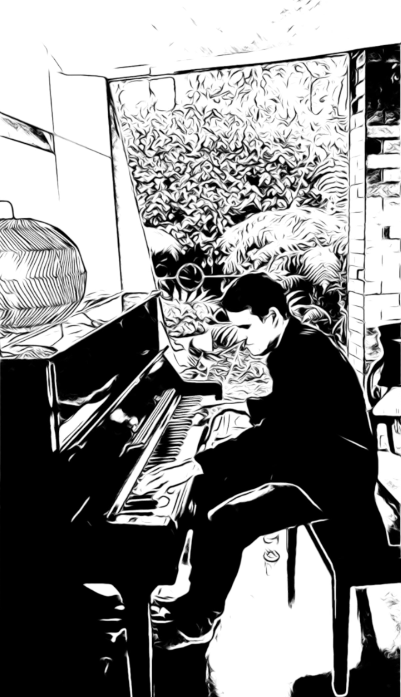

I have wanted to code this up for ages and finally got around to it. A way to track my listening and explore new music.
I have wanted to code this up for ages and finally got around to it. A way to track my listening and explore new music.
Exploring ways to simplify analysis of scores. There must be a simlper way! Here is my updated template for orchestration analysis. Will post a video on this.
After a crazy few months, I have finally finished moving. To Fennell Bay on Lake Macquarie. It is lovely here! A room filled with boxes is set to become the new studio! Excited to say it should be set up for teaching in Term 4.
My book of Keith Jarrett Transcriptions. Great for practice and music analysis!
First pass of Deep Improv Code project is in the repo. Trying to find time to integrate with an audio implementationTBP project. I know, fun right! You so know you wanna collab! Reach out to me.
Transcription from Imaginary Day Album. I love this piece. Full of energy and joy, and so much fun to play.
For ages I thought this piece was written by John Abercrombie. So his vibe, but turns out he was only playing on it. But the harmony here. So beautiful.